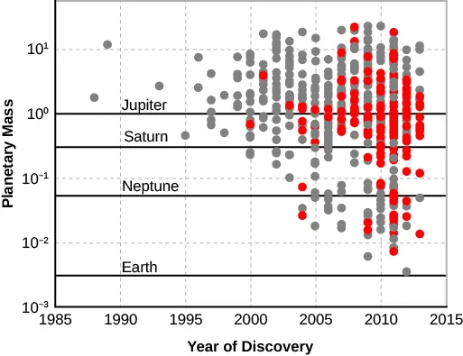

Reading Anchor
OpenStax Astronomy 2e, Chapters 30.1-30.4 and selected review links on exoplanets, life, surveys, and evaluating evidence. The local textbook reference is stored at references/openstax-astronomy-2e.pdf. These notes use the textbook for scope and terminology while presenting original explanations and examples.
Lecture Arc
Modern astronomy grows through surveys, missions, time-domain alerts, gravitational waves, neutrinos, and exoplanet discoveries that extend the same evidence habits developed all term.
The lecture should begin by asking students what can be observed directly. Only after that should the explanatory model be introduced. This helps students distinguish evidence from interpretation, a distinction that becomes essential when the course moves from the night sky to stars, galaxies, and cosmology.
Terms Developed in Context
These terms form a connected reasoning system for the lecture. Each entry extends the concise slide panel by showing how the term is used, what it is linked to observationally or mathematically, and where its interpretation can fail.
- survey
A systematic observing program designed to measure a defined sample or region with documented selection and calibration. Surveys turn individual detections into population-level evidence. Cadence, depth, sky area, wavelength, and selection function determine which phenomena and populations are measurable.
In context: A reproducible survey states detection thresholds, masks, observing cadence, and data processing. Archive users must understand these choices before drawing demographic conclusions. Boundary: A large sample is not automatically representative if the selection process is biased.
- selection effect
A systematic difference between the population observed and the population that exists, caused by how targets enter a sample. It can create false trends or hide real populations even when every measurement is individually accurate. Detection threshold, survey cadence, wavelength, geometry, and follow-up choices define a selection function.
In context: Early exoplanet catalogs favored massive close-in planets because those systems produced stronger, faster signals. Correct inference models the probability that each kind of object would have been detected. Boundary: It is not random noise and cannot always be removed by increasing sample size.
- transit
A periodic decrease in observed stellar flux when an orbiting body crosses the star's apparent disk. Transit depth estimates planet-to-star area ratio and repeated timing determines orbital period. For a small dark planet, \(\Delta F/F\approx(R_p/R_\star)^2\); spectroscopy during transit can probe an atmosphere.
In context: Transit duration and shape constrain impact parameter and stellar density when combined with a model. Planet radius still depends on knowing the star's radius. Boundary: Only favorably aligned systems transit, and stellar variability or blended eclipsing binaries can mimic the signal.
- radial velocity
The component of an object's velocity along the observer's line of sight, inferred from Doppler shifts. Periodic stellar radial-velocity changes reveal the gravitational pull of orbiting companions. Combined with a transit, it constrains planet mass and density; the signal also depends on orbital inclination.
In context: The method measures the star's reflex motion around the system center of mass. Multiple spectral lines and activity indicators help separate orbital motion from spots and pulsations. Boundary: Without inclination information it usually yields a minimum companion mass, and stellar activity can imitate a planet.
- multi-messenger astronomy
The coordinated study of an event or source using different carriers such as electromagnetic radiation, gravitational waves, neutrinos, and cosmic rays. Different messengers probe complementary regions and physical processes that one channel alone cannot reveal. Timing and sky localization link detections; physical models must explain all messenger data consistently.
In context: A robust association quantifies chance-coincidence probability and respects instrument latency and sky coverage. Non-detections can also constrain models. Boundary: Coincidence is not automatically association, and each messenger has distinct backgrounds and localization limits.
- biosignature
An observable feature whose presence, abundance, pattern, or disequilibrium could indicate biological activity. It frames the search for life as inference from measurements rather than recognition of a single Earth-like molecule. Atmospheric spectra, surface reflectance, environmental context, and planetary evolution all enter interpretation.
In context: A persuasive claim requires multiple compatible lines of evidence and elimination of plausible nonbiological production pathways. Detectability also depends on clouds, stellar contamination, and instrument sensitivity. Boundary: No proposed biosignature is automatically proof of life; abiotic false positives and biological false negatives must be tested.
- uncertainty
A quantified statement of the range and structure of values consistent with measurement and model limitations. It determines how strongly data support a claim and whether two results are meaningfully different. Random noise, calibration systematics, model assumptions, and sample variance contribute in different ways.
In context: Good reporting states what the interval means and how it was obtained. Repeated precision cannot compensate for an unrecognized bias shared by all measurements. Boundary: Uncertainty is not ignorance or error in the sense of a mistake, and a narrow statistical interval does not include every systematic risk.
- source evaluation
The structured assessment of a claim's provenance, evidence, methods, expertise, conflicts, and consistency with independent results. It separates persuasive presentation from reliable astronomical knowledge. Primary data, peer-reviewed analysis, mission documentation, uncertainty, and reproducibility form an evidence chain.
In context: Students should trace headlines back to the underlying paper or data release, identify what was measured versus inferred, and check whether later work confirms the result. Evaluation is strongest when criteria are applied consistently to favored and disfavored claims. Boundary: Authority alone does not prove a claim, while a single anomaly does not overturn a well-tested model without comparable evidence.
Evidence Table
| # | Evidence or observation | How students should interrogate it |
|---|---|---|
| 1 | Exoplanet discoveries depend strongly on detection method and selection bias. | What measurement, image, spectrum, or sky observation would support this? |
| 2 | Transient astronomy combines rapid alerts with follow-up observations. | What measurement, image, spectrum, or sky observation would support this? |
| 3 | Claims about life, black holes, or cosmology require stronger evidence than headlines often provide. | What measurement, image, spectrum, or sky observation would support this? |
Model Development
The model for this lecture has three linked parts:
- A scientific claim connects evidence to a model while preserving uncertainty.
- Different observing methods reveal different parts of parameter space.
- Ethics of sky access includes light pollution, satellite constellations, cultural sky knowledge, and data stewardship.
The instructor should emphasize where the model is a simplification. Introductory astronomy often works by adopting a useful first model, identifying its assumptions, and then refining it when new evidence demands more detail.
Quantitative Reasoning
This equation or proportionality is not just a formula to memorize. It is a compact statement of a physical or geometric relationship. A strong student solution defines each symbol, states the unit system, identifies the assumptions, and interprets the result in words.
Worked Example
- A claimed Earth-like exoplanet may be Earth-sized, in a habitable-zone orbit, or compositionally Earth-like; these are different claims.
- A careful evaluation asks which measurement supports which part of the claim.
- The same standard applies across the course.
After completing the calculation, students should ask whether the result is plausible. A numerical answer without a reasonableness check is not yet a scientific conclusion.
Visual Interpretation

Early detections cluster at high masses because detection methods favored large, close-in planets. Credit: OpenStax Astronomy 2e, Fig. 14.17, CC BY-NC-SA 4.0.
Misconception and Boundary Condition
The correction should not be presented as a slogan. It should be tied to the evidence and model from this lecture. Students should practice saying what would be different if the misconception were true.
Active Learning Plan
Students critique two astronomy news claims, identifying evidence, model, uncertainty, missing context, and what measurement would change confidence.
A suggested timing is 2 minutes individual prediction, 3 minutes peer comparison, and 3 minutes whole-class synthesis. The point is to make students commit to a model before seeing the instructor's full explanation.
Lab or Observing Connection
The final portfolio workshop connects observing practice, evidence, and communication.
Students should see the lab as a continuation of lecture reasoning. The lab does not merely demonstrate a concept; it asks students to collect, interpret, or critique evidence with uncertainty.
Synthesis and Study Questions
The course ends where astronomy begins: with awe disciplined by measurement, model testing, and intellectual humility.
- What was the central observation or evidence pattern?
- What model explains it, and what assumptions does the model make?
- Where did quantitative reasoning constrain the claim?
- What uncertainty, limitation, or misconception remains important?
References
- OpenStax, Astronomy 2e: OpenStax Astronomy 2e, Chapters 30.1-30.4 and selected review links on exoplanets, life, surveys, and evaluating evidence.
- Course reference log:
../reference-log.md.